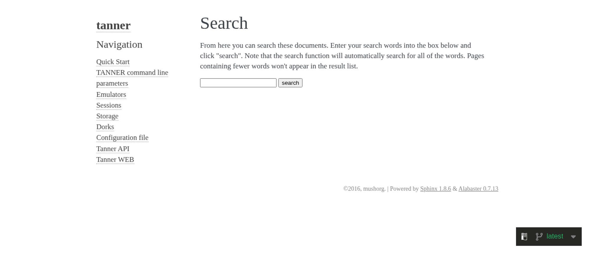

Tested 2025-06-27 12:47:11 using Chrome 137.0.7151.55 (runtime settings).
| Metric | Value |
|---|---|
| Page metrics | |
| Performance score | 96 |
| Total page size | 206.9 KB |
| Requests | 18 |
| Timing metrics | |
| TTFB | 999 ms |
| First Paint | 1.576 s |
| Fully Loaded | 2.201 s |
| Google Web Vitals | |
| TTFB | 999 ms |
| First Contentful Paint (FCP) | 1.576 s |
| Largest Contentful Paint (LCP) | 1.576 s |
| Cumulative Layout Shift (CLS) | 0.00 |
| CPU metrics | |
| CPU long tasks | 1 |
| CPU last long task happens at | 1.553 s |

Use--filmstrip.showAll to show all filmstrips.
 0 sFirst Visual Change 0 msLast Visual Change 0 msVisual Complete 85% 0 msVisual Complete 95% 0 msVisual Complete 99% 0 ms
0 sFirst Visual Change 0 msLast Visual Change 0 msVisual Complete 85% 0 msVisual Complete 95% 0 msVisual Complete 99% 0 msThe coach helps you find performance problems on your web page using web performance best practice rules. And gives you advice on privacy and best practices. Tested using Coach-core version 8.1.1.

| Title | Advice | Score | ||||||||||||||||||||||||||||||
|---|---|---|---|---|---|---|---|---|---|---|---|---|---|---|---|---|---|---|---|---|---|---|---|---|---|---|---|---|---|---|---|---|
| Inline CSS for faster first render (inlineCss) | The page has both inline CSS and CSS requests even though it uses a HTTP/2-ish connection. If you have many users on slow connections, it can be better to only inline the CSS. Run your own tests and check the waterfall graph to see what happens. | 95 | ||||||||||||||||||||||||||||||
| Description: In the early days of the Internet, inlining CSS was one of the ugliest things you can do. That has changed if you want your page to start rendering fast for your user. Always inline the critical CSS when you use HTTP/1 and HTTP/2 (avoid doing CSS requests that block rendering) and lazy load and cache the rest of the CSS. It is a little more complicated when using HTTP/2. Does your server support HTTP push? Then maybe that can help. Do you have a lot of users on a slow connection and are serving large chunks of HTML? Then it could be better to use the inline technique, becasue some servers always prioritize HTML content over CSS so the user needs to download the HTML first, before the CSS is downloaded. | ||||||||||||||||||||||||||||||||
| Avoid CPU Long Tasks (longTasks) | The page has 1 CPU long task with the total of 131 ms. The total blocking time is 0 ms and 1 long task before first contentful paint with total time of 131 ms. However the CPU Long Task is depending on the computer/phones actual CPU speed, so you should measure this on the same type of the device that your user is using. Use Geckoprofiler for Firefox or Chromes tracelog to debug your long tasks. | 80 | ||||||||||||||||||||||||||||||
| Description: Long CPU tasks locks the thread. To the user this is commonly visible as a "locked up" page where the browser is unable to respond to user input; this is a major source of bad user experience on the web today. However the CPU Long Task is depending on the computer/phones actual CPU speed, so you should measure this on the same type of the device that your user is using. To debug you should use the Chrome timeline log and drag/drop it into devtools or use Firefox Geckoprofiler. | ||||||||||||||||||||||||||||||||
| Offenders: | ||||||||||||||||||||||||||||||||
| Long cache headers is good (cacheHeadersLong) | The page has 17 requests that have a shorter cache time than 30 days (but still a cache time). | 83 | ||||||||||||||||||||||||||||||
| Description: Setting a cache header is good. Setting a long cache header (at least 30 days) is even better beacause then it will stay long in the browser cache. But what do you do if that asset change? Rename it and the browser will pick up the new version. | ||||||||||||||||||||||||||||||||
| Offenders: | ||||||||||||||||||||||||||||||||
| Total JavaScript size shouldn't be too big (javascriptSize) | The total JavaScript transfer size is 196.3 kB and the uncompressed size is 640.3 kB. This is quite large. | 0 | ||||||||||||||||||||||||||||||
| Description: A lot of JavaScript often means you are downloading more than you need. How complex is the page and what can the user do on the page? Do you use multiple JavaScript frameworks? | ||||||||||||||||||||||||||||||||
Offenders:
| ||||||||||||||||||||||||||||||||
| Title | Advice | Score |
|---|---|---|
| Declare a doctype in your document (doctype) | Just do yourself a favor and use the HTML5 doctype declaration: <!DOCTYPE html> | 25 |
| Description: The <!DOCTYPE> declaration is not an HTML tag; it is an instruction to the web browser about what version of HTML the page is written in. | ||
| Meta description (metaDescription) | The page is missing a meta description. | 0 |
| Description: Use a page description to make the page more relevant to search engines. | ||
| Avoid use too many response headers (manyHeaders) | https://tanner.readt...atest/search.html has 33 headers.https://tanner.readt...tic/alabaster.css has 34 headers.https://tanner.readt...atic/pygments.css has 34 headers.https://tanner.readt...tation_options.js has 32 headers.https://tanner.readt..._static/jquery.js has 31 headers.https://tanner.readt...tic/underscore.js has 31 headers.https://tanner.readt...tatic/doctools.js has 32 headers.https://tanner.readt.../language_data.js has 32 headers.https://tanner.readt...static/custom.css has 32 headers.https://tanner.readt..._static/basic.css has 32 headers.https://tanner.readt...st/searchindex.js has 31 headers. | 89 |
| Description: Avoid send too many response headers. | ||
| Offenders: | ||
| Avoid too many third party requests (thirdParty) | The page do 17% requests to third party domains (3 requests and 12.4 kB). First party is 15 requests and 199.5 kB. The regex .*readthedocs.* was used to calculate first/third party requests. | 50 |
| Description: Do not load most of your content from third party URLs. | ||
| Avoid unnecessary headers (unnecessaryHeaders) | There are 1 response that sets both a max-age and expires header. There are 18 responses that sets a server header. | 81 |
| Description: Do not send headers that you don't need. We look for p3p, cache-control and max-age, pragma, server and x-frame-options headers. Have a look at Andrew Betts - Headers for Hackers talk as a guide https://www.youtube.com/watch?v=k92ZbrY815c or read https://www.fastly.com/blog/headers-we-dont-want. | ||
| Offenders: | ||
| Title | Advice | Score |
|---|---|---|
| Use a good Content-Security-Policy header to make sure you you avoid Cross Site Scripting (XSS) attacks. (contentSecurityPolicyHeader) | Set a Content-Security-Policy header to make sure you are not open for Cross Site Scripting (XSS) attacks. You can start with setting a Content-Security-Policy-Report-Only header, that will only report the violation, not stop the download. | 0 |
| Description: Content Security Policy is delivered via a HTTP response header, and defines approved sources of content that the browser may load. It can be an effective countermeasure to Cross Site Scripting (XSS) attacks and is also widely supported and usually easily deployed. https://scotthelme.co.uk/content-security-policy-an-introduction/. | ||
| Offenders: | ||
| Page info | |
|---|---|
| Title | Search — tanner 1.0 documentation |
| Width | 1366 |
| Height | 621 |
| DOM elements | 85 |
| Avg DOM depth | 5 |
| Max DOM depth | 9 |
| Iframes | 0 |
| Script tags | 15 |
| Local storage | 0 b |
| Session storage | 0 b |
| Network Information API | 4g |
Data collected using Wappalyzer version 6.10.66. With updated code from Webappanalyzer 2024-12-27. Use --browsertime.firefox.includeResponseBodies htmlor --browsertime.chrome.includeResponseBodies htmlto help Wappalyzer find more information about technologies used.
| Technology | Confidence | Category |
|---|---|---|
| Amazon Web Services | 100 | PaaS |
| HSTS | 100 | Security |
| Cloudflare | 100 | CDN |
| HTTP/3 | 100 | Miscellaneous |
| Visual Metrics | |
|---|---|
| First Visual Change | 0 ms |
| Speed Index | 0 ms |
| VisuallyComplete | 0 ms |
| Visual Complete 85% | 0 ms |
| Visual Complete 95% | 0 ms |
| Visual Complete 99% | 0 ms |
| Last Visual Change | 0 ms |
| Visual Readiness | 0 ms |
| Navigation Timing | |
|---|---|
| backEndTime | 999 ms |
| domContentLoadedTime | 1.686 s |
| domInteractiveTime | 1.686 s |
| domainLookupTime | 0 ms |
| frontEndTime | 687 ms |
| pageDownloadTime | 1 ms |
| pageLoadTime | 1.688 s |
| redirectionTime | 0 ms |
| serverConnectionTime | 0 ms |
| serverResponseTime | 196 ms |
| Google Web Vitals | |
|---|---|
| Time to first byte (TTFB) | 999 ms |
| First Contentful Paint (FCP) | 1.576 s |
| Largest Contentful Paint (LCP) | 1.576 s |
| Total Blocking Time (TBT) | 0 ms |
| Extra timings | |
|---|---|
| TTFB | 999 ms |
| First Paint | 1.576 s |
| Load Event End | 1.688 s |
| Fully loaded | 2.201 s |
When in time the page main content is rendered (collected using the Largest Contentful Paint API). Read more about Largest Contentful Paint.
| Element type | P |
| Element/tag | <p></p> |
| Render time | 1.576 s |
| Element render delay | 577 ms |
| TTFB | 999 ms |
| Resource delay | 0 ms |
| Resource load duration | 0 ms |
| Load time | 0 ms |
| Size (width*height) | 44086 |
| DOM path | |
| div:eq(0) > div:eq(0) > div > div > p> div:eq(0) > div:eq(0) > div > div > p> | |
The largest contentful paint is highlighted in the image. If no element is highlighted the element was removed before the screenshot or the LCP API couldn't find the element.
No layout shift detected.
Read more about the Long Animation Frames API here here.
The top 10 longest animation frames entries
| Blocking duration | Work duration | Render duration | PreLayout Duration | Style And Layout Duration |
|---|---|---|---|---|
| 81.9 ms | 131.3 ms | 0.9 ms | 0 ms | 0.9 ms |
| https://tanner.readthedocs.io/_/static/javascript/readthedocs-addons.js | ||||
Invoker: https://tanner.readthedocs.io/_/static/javascript/readthedocs-addons.js | ||||
| Blocking duration | Work duration | Render duration | PreLayout Duration | Style And Layout Duration |
|---|---|---|---|---|
| 2.2 ms | 525.2 ms | 22.8 ms | 0.1 ms | 22.7 ms |
| https://tanner.readthedocs.io/en/latest/_static/jquery.js | ||||
Invoker: https://tanner.readthedocs.io/en/latest/_static/jquery.js | ||||
There are no Server Timings.
There are no custom configured scripts.
There are no custom extra metrics from scripting.
| name | value |
|---|---|
| AudioHandlers | 0 |
| AudioWorkletProcessors | 0 |
| Documents | 10 |
| Frames | 3 |
| JSEventListeners | 39 |
| LayoutObjects | 122 |
| MediaKeySessions | 0 |
| MediaKeys | 0 |
| Nodes | 923 |
| Resources | 20 |
| ContextLifecycleStateObservers | 11 |
| V8PerContextDatas | 3 |
| WorkerGlobalScopes | 0 |
| UACSSResources | 0 |
| RTCPeerConnections | 0 |
| ResourceFetchers | 10 |
| AdSubframes | 0 |
| DetachedScriptStates | 2 |
| ArrayBufferContents | 0 |
| LayoutCount | 7 |
| RecalcStyleCount | 8 |
| LayoutDuration | 21 |
| RecalcStyleDuration | 8 |
| DevToolsCommandDuration | 30 |
| ScriptDuration | 225 |
| V8CompileDuration | 1 |
| TaskDuration | 352 |
| TaskOtherDuration | 66 |
| ThreadTime | 0 |
| ProcessTime | 0 |
| JSHeapUsedSize | 5988524 |
| JSHeapTotalSize | 9965568 |
| FirstMeaningfulPaint | 1573 |
How the page is built.
| Summary | |
|---|---|
| HTTP version | HTTP/2.0 |
| Total requests | 18 |
| Total domains | 2 |
| Total transfer size | 206.9 KB |
| Total content size | 666.0 KB |
| Responses missing compression | 13 |
| Number of cookies | 15 |
| Third party cookies | 0 |
| Requests per response code | |
|---|---|
| 200 | 18 |
| Content | Header Size | Transfer Size | Content Size | Requests |
|---|---|---|---|---|
| html | 0 b | 3.2 KB | 6.1 KB | 1 |
| css | 0 b | 8.8 KB | 26.5 KB | 4 |
| javascript | 0 b | 191.7 KB | 625.3 KB | 9 |
| image | 0 b | 1.0 KB | 86 B | 2 |
| json | 0 b | 1.8 KB | 7.3 KB | 1 |
| favicon | 0 b | 427 B | 766 B | 1 |
| Total | 0 b | 206.9 KB | 666.0 KB | 18 |
| Domain | Total download time | Transfer Size | Content Size | Requests |
|---|---|---|---|---|
| tanner.readthedocs.io | 2.741 s | 194.8 KB | 626.3 KB | 15 |
| media.ethicalads.io | 80 ms | 12.2 KB | 39.7 KB | 3 |
| type | min | median | max |
|---|---|---|---|
| Expires | 20 minutes | 20 minutes | 1 hour |
| Last modified | 2 minutes | 4 years | 5 years |
Included requests done after load event end.
| Content | Transfer Size | Requests |
|---|---|---|
| html | 0 b | 0 |
| css | 0 b | 0 |
| javascript | 14.9 KB | 2 |
| image | 1.0 KB | 2 |
| font | 0 b | 0 |
| favicon | 427 B | 1 |
| Total | 16.3 KB | 5 |
Includes requests done after DOM content loaded.
| Content | Transfer Size | Requests |
|---|---|---|
| html | 0 b | 0 |
| css | 0 b | 0 |
| javascript | 14.9 KB | 2 |
| image | 1.0 KB | 2 |
| font | 0 b | 0 |
| favicon | 427 B | 1 |
| Total | 16.3 KB | 5 |
Third party requests categorised by Third party web version 0.26.2.
| Category | Requests |
|---|
| Category | Number of tools |
|---|
Here's a list of domains that didn't match any tool in Third party web. If you are sure they are third party domains, please do a PR to that project. You can also fine tune the list using --firstParty.
| media.ethicalads.io |
Calculated using .*readthedocs.* (use --firstParty to configure).
| Content | Header Size | Transfer Size | Content Size | Requests |
|---|---|---|---|---|
| html | 0 b | 3.2 KB | 6.1 KB | 1 |
| css | 0 b | 8.8 KB | 26.5 KB | 4 |
| javascript | 0 b | 180.6 KB | 585.6 KB | 8 |
| image | 0 b | 0 b | 0 b | 0 |
| font | 0 b | 0 b | 0 b | 0 |
| json | 0 b | 1.8 KB | 7.3 KB | 1 |
| favicon | 0 b | 427 B | 766 B | 1 |
| Total | N/A | 194.8 KB | 626.3 KB | 15 |
| Content | Header Size | Transfer Size | Content Size | Requests |
|---|---|---|---|---|
| html | 0 b | 0 b | 0 b | 0 |
| css | 0 b | 0 b | 0 b | 0 |
| javascript | 0 b | 11.1 KB | 39.7 KB | 1 |
| image | 0 b | 1.0 KB | 86 B | 2 |
| font | 0 b | 0 b | 0 b | 0 |
| Total | N/A | 12.2 KB | 39.7 KB | 3 |

afterPageCompleteCheck.png
layoutShift.png
largestContentfulPaint.png
{kind=link}
{kind=link}
{kind=link}
{kind=link}
{kind=link}
{kind=link}
{kind=link}
{kind=link}